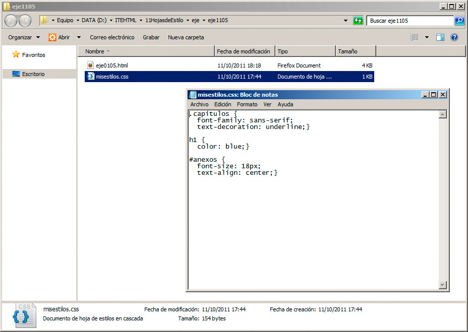

Aún hay un método más para aplicar estilos, consistente en almacenar los estilos fuera de la página web. Pensemos en un sitio web con 20 páginas a las que le vamos a dar una apariencia común. Para usar los estilos en la cabecera de la página, tendríamos que copiar el conjunto de reglas y pegarlo en cada una de las páginas. Sería viable, pero cada vez que fuésemos a modificar algún detalle de los estilos, tendríamos que abrir las 20 páginas y aplicar los cambios. Esto es poco racional.
Para trabajar cómodamente con estilos en sitios grandes, el método ideal se basa en crear un archivo con extensión .css, dentro del que meteremos todos los estilos de nuestro sitio web.
En concreto, un archivo de estilos tendría una apariencia similar al de la figura.

Enlazar un archivo .css
Para que el archivo con los estilos tenga efecto en la página, debemos indicar en la cabecera del archivo .html que se va a tomar ese estilo, mediante la etiqueta <link>, así:
<link rel="stylesheet" href="misestilos.css" type="text/css" media="all">
Cada parámetro tiene su propio significado:
- rel: indica la relación entre el documento y el archivo que se carga; en este caso será su hoja de estilos.
- href: como en los enlaces normales, indica la URL del archivo. Al encontrarse en la misma carpeta, sólo indicaremos el nombre; pero si estuviese en otro lugar o incluso en otro servidor, crearíamos las rutas siguiendo las normas de los enlaces.
- type: indica el tipo de información. Tanto este valor como el de rel, serán siempre iguales.
- media: especifica a qué medio se aplicará la hoja de estilo. En este caso se aplica a todos los medios, pero podríamos tener hojas de estilo diferentes para impresión (print), móviles (handheld), televisiones (tv), etc.
Por tanto, esa línea será la que repetiremos a través de nuestras diferentes páginas, para que tomen la apariencia deseada.
Pregunta Verdadero-Falso
Verdadero Falso
Verdadero Falso
Nota
Otra forma de importar una hoja de estilos es mediante la secuencia @import url(misestilos.css). Esta línea se insertaría entre las etiquetas <style> y </style>. Este método se puede usar también para importar una hoja de estilos dentro de otra hoja de estilos.
Múltiples hojas de estilo
Un detalle a tener en cuenta es que una misma página web puede emplear varias hojas de estilo diferentes. De hecho es una práctica muy frecuente para separar, por ejemplo, los aspectos relativos a maquetación de los puramente gráficos.
Cuando llegue el momento de preparar la página web, el navegador juntará todos los estilos y los ordenará, para aplicarlos correctamente.